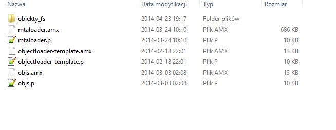
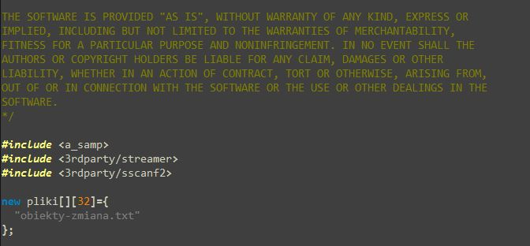
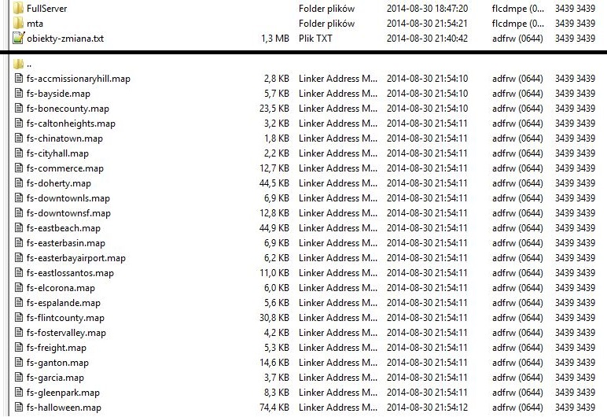
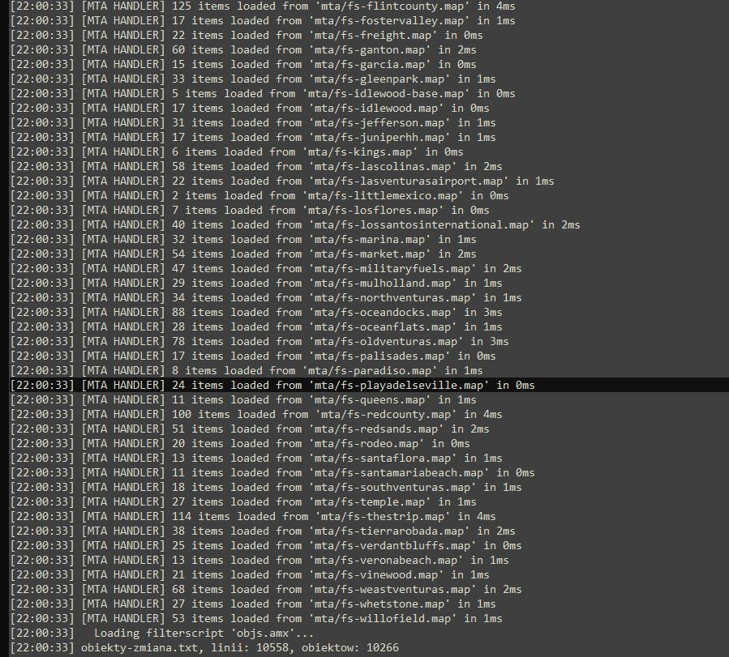

Obiekty podzielone są na dwie częsci - TXT (w pliku .txt linijki z CreateDynamicObject) oraz MAP (plik .map bezpośrednio z MTA). Za ładowanie obiektów TXT odpowiada skrypt objs.p a za ładowanie obiektów MAP odpowiada skrypt mtaloader.p
Pierwszym etapem będzie wypakowanie archiwum z obiektami. Po wypakowaniu powinniśmy ujrzeć następujące drzewo katalogów:

Poświęćmy chwilę na wytłumaczenie od czego konkretne pliki są. Wiemy już, że objs.p ładuje obiekty TXT a mtaloader ładuje obiekty MAP. Czym więc jest plik objectloader-template.p? Jest to po prostu kopia objs.p. Używaliśmy pojedycznych skryptów do ładowania osobnych plików od osobnych maperów. Nie powinieneś na razie zawracać sobie głowy tym plikiem.
Zobaczmy jak wygląda plik objs.p:

Jak widzimy ścieżki do include są identyczne jak w gamemodzie. Ma to związek ze sposobem kompilowania skryptów jakiego używaliśmy. Możesz zamienić te ścieżki na inne, tak abyś mógł kompilować te skrypty normalnie. Pamiętaj tylko aby include zgadzały się z tymi których używasz do gamemode.
Zobaczmy teraz na tablicę pliki[]. Jest to po prostu lista plików z katalogu scriptfiles. Jeżeli chcesz załadować inne pliki musisz dodać kolejny wpis w tablicy i skompilować skrypt na nowo. Jeżeli któregoś z plików nie ma - serwer nie uruchomi się! W pliku mtaloader.p znajduje się identyczna tablica z listą plików, z tym wyjątkiem, że pliki muszą znajdować się w katalogu scriptfiles/mta.
Skopiujmy więc pliki do odpowiednich katalogów. Pliki znajdują się w katalogu obiekty_fs w wypakowanych archiwum. W tym przykładzie załadujemy zarówno obiekty MTA jak i TXT. Pamiętaj, że niektóre obiekty (np. areny do zabaw) są w obiektach TXT. W obiektach MAP znajdują się głównie pojazdy. Po skopiowaniu drzewo katalogów na FTP powinno wyglądać mniej więcej tak:

Teraz musimy w server.cfg w linijce filterscripts na końcu dopisać mtaloader objs aby serwer załadował nasze skrypty.
Uruchamiamy nasz serwer i czekamy chwilę aż się załaduje. Jeżeli wszystko się udało to serwer powinien być online a obiekty powinny być załadowane. Aby to sprawdzić zaglądamy do logów serwera. Powinniśmy znaleźć w nich takie linijki:
